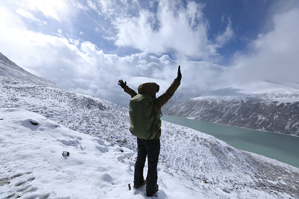

Petualangan 5 Hari Menyusuri Pulau Kecil

Perjalanan ini dimulai dari pelabuhan kecil yang dikelilingi rumah-rumah nelayan.
Hari pertama dihabiskan untuk menjelajahi desa dan mencicipi makanan laut segar.
Hari kedua dan ketiga lebih seru: snorkeling, melihat terumbu karang berwarna-warni,
hingga menyusuri goa bawah laut yang hanya muncul saat air surut.
Hari keempat kami mengunjungi bukit padang rumput yang luas dan foto-foto aesthetic.
Hari terakhir dihabiskan dengan naik sepeda keliling pulau sambil menikmati angin laut.
Mendaki Saat Musim Dingin — Tantangan & Keindahan

Mendaki saat musim dingin adalah pengalaman yang tidak semua orang berani coba.
Medannya licin, kabut tebal, dan angin menusuk tulang. Namun di balik semua itu,
ada keindahan yang tidak bisa didapatkan di musim lain. Pepohonan diselimuti embun beku,
dan jejak kaki kita di salju memberikan sensasi damai tersendiri.
Meski penuh tantangan, perjalanan ini memberikan banyak pelajaran bahwa keindahan
sering ditemui melalui proses yang sulit.